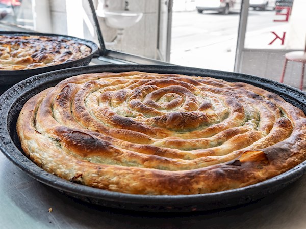

Burek

Second best dish ever made
Burek , vrsta jela od razvučenog tijesta s mesom ili sirom.
Jelo je rašireno na području nekadašnjeg Osmanskog Carstva.
Ingredients
- Tijesto
- 350gr brasno
- 1 jaje
- 3gr soli
- 150ml vode
- Mesna masa
- 500gr Mljevene junetine
- 100ml vruce vode
- Glavica luka
Steps
- Promjesati tijesto
- Razdvojiti tijesto
- Motanje jufke
- Peci 45 min
- Preliti jogurtom i ostaviti da odstoji 5 min
- Servirati
Return to top
Go back to main page